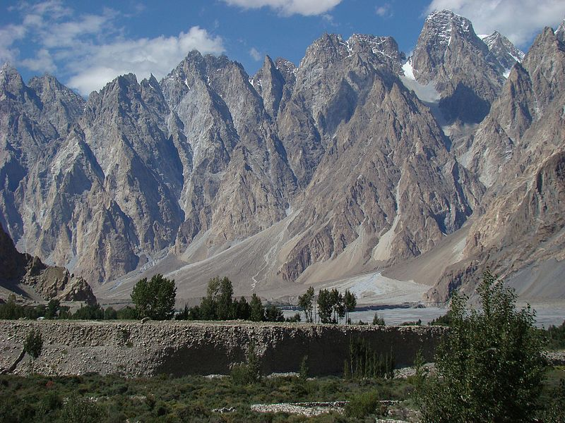
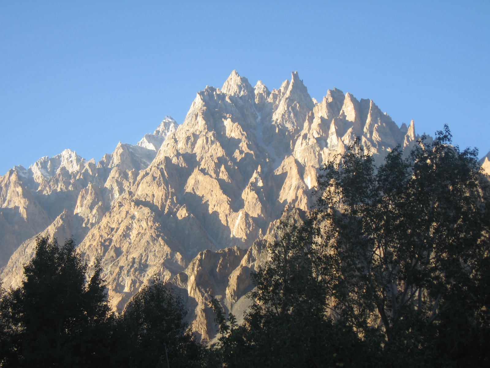
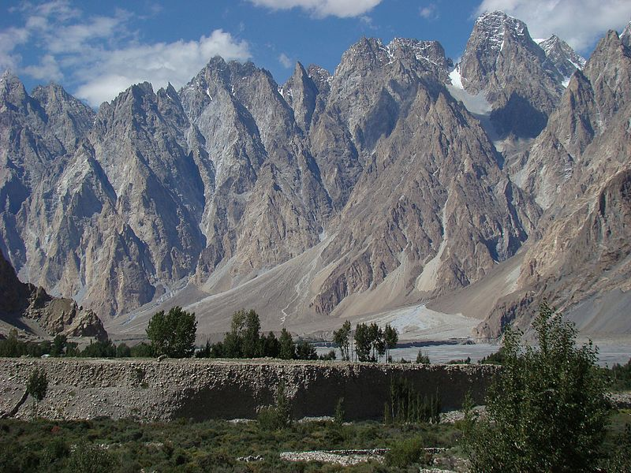
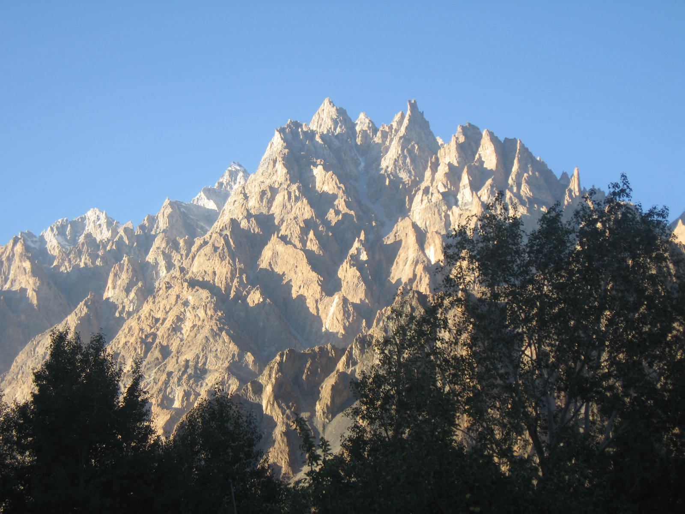
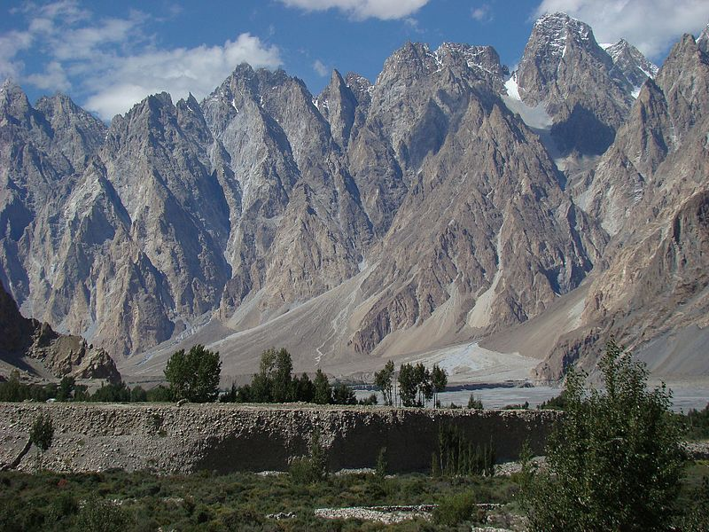
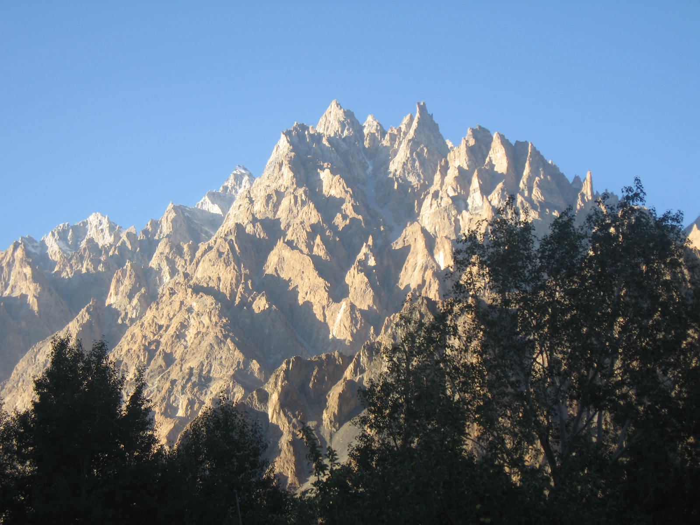
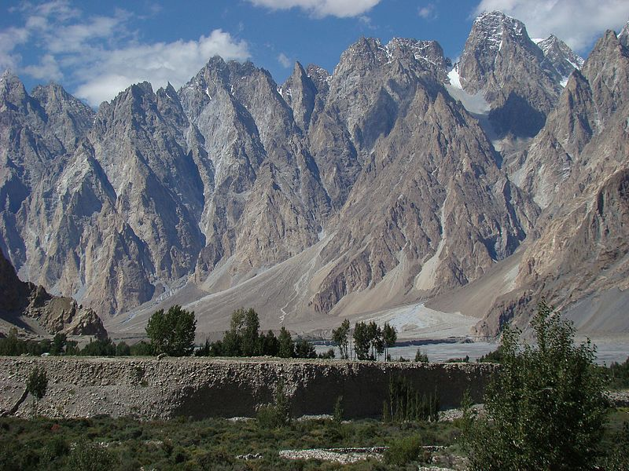
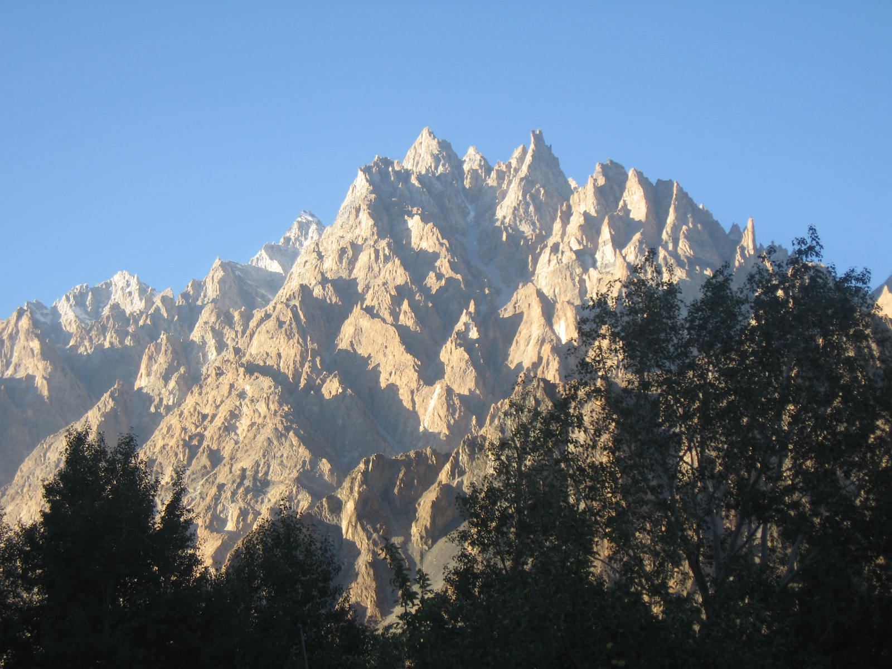

In the heart of Pakistan's Gilgit-Baltistan region, a towering sentinel of nature looms over the landscape. Tupopdan, also known as "Passu Cones," is a jagged, mysterious mountain that beckons to adventurers and explorers alike. For me, it was an irresistible challenge that I couldn't ignore.
The journey began in the charming village of Passu, a gateway to some of Pakistan's most remarkable peaks. As I stood before the imposing massif of Tupopdan, its multiple summits stood like a group of ancient sentinels guarding the secrets of the land. The mountain's rugged peaks cut through the cerulean sky, leaving a sense of awe that I could not ignore. I embarked on my hike early in the morning, the brisk mountain air invigorating my senses. The path wound through a landscape of immense beauty. Pristine glacial streams flowed gently beside the trail, their crystal-clear waters mirroring the surrounding peaks. Wildflowers added bursts of color to the otherwise rocky terrain. Tupopdan was my sole focus, and I was determined to approach it on my terms. I ventured through alpine meadows and rocky outcrops, each step bringing me closer to the mountain. The higher I climbed, the closer I came to the ever-elusive base of Tupopdan. The path was arduous, and the air grew thinner, but the promise of witnessing the legendary mountain up close kept me going. As I approached the base of Tupopdan, the towering peaks seemed to stretch higher and higher into the heavens. Their jagged edges gave the impression of impenetrable fortresses, yet I couldn't resist the allure. I set up camp and prepared to explore the vicinity further.
My days at the base of Tupopdan were filled with exhilarating hikes and moments of quiet contemplation. The mountain's presence was all-encompassing, and its splendor left me in a perpetual state of wonder. The glaciers that flowed down from its heights created a stunning, ever-changing tapestry of ice, reflecting the changing light of the day. On the final day, I set out to ascend one of Tupopdan's lower summits. The path was steep and challenging, requiring both physical and mental fortitude. As I neared the top, the world beneath me unfolded like a living map. The valley, the Karakoram Range, and the distant village of Passu seemed miniature beneath my feet. Reaching the summit, I stood in quiet reverence. The majestic Tupopdan had bestowed upon me the privilege of experiencing its unparalleled beauty. I could see far and wide, understanding the scale of the land and the enduring grandeur of the Karakoram Range. My descent was bittersweet, knowing that my time with Tupopdan had come to an end. But the memories of this challenging hike and the beauty of this remote and untouched corner of the world remain etched in my heart.
Tupopdan had welcomed me, tested my spirit, and in the end, rewarded me with a sense of accomplishment and a profound connection to the natural world. It was an adventure that left me forever humbled and inspired by the grandeur of our planet's most magnificent landscapes.